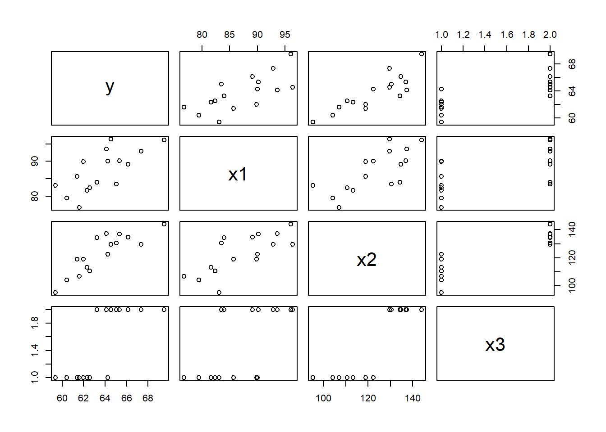
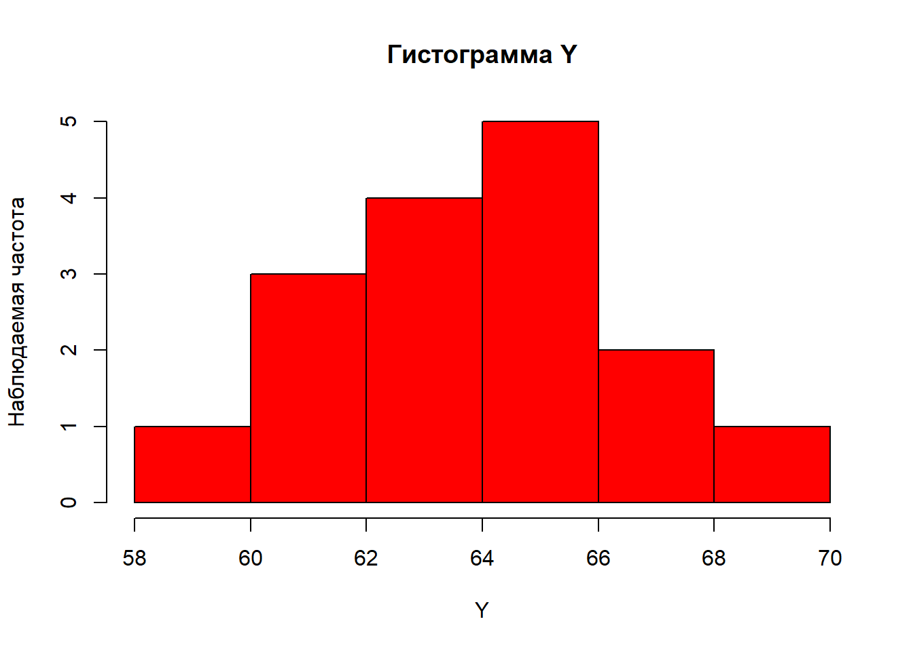
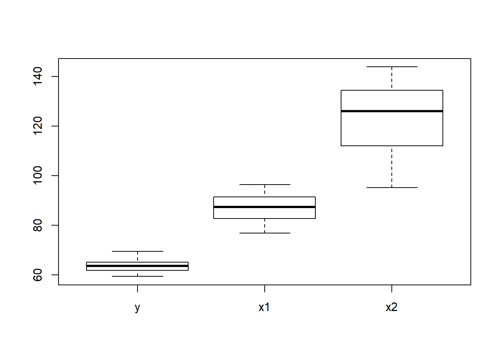
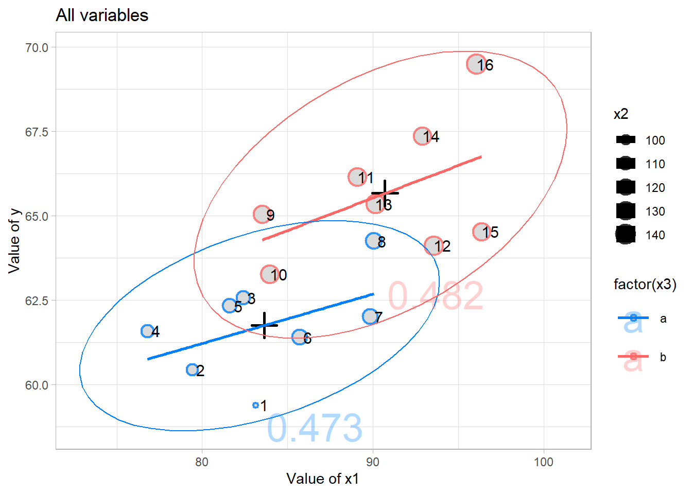

Раздел 4 Визуализация данных
Рассмотрим способы визуализации на сгенерированном наборе данных:
dt4 <- data.table(id = 1:16,
y = seq(60,by = 0.5, length.out = 16)+rnorm(16, 0, 1),
x1 = seq(80,by = 1, length.out = 16)+rnorm(16, 0, 3),
x2 = seq(100,by = 3, length.out = 16)+rnorm(16, 0, 5),
x3=c(rep('a', 8),rep('b', 8))
)
dt4
# id y x1 x2 x3
# 1: 1 60.67591 79.21969 92.26569 a
# 2: 2 61.72452 80.58171 108.15305 a
# 3: 3 61.92236 82.87583 102.37141 a
# 4: 4 61.79400 85.93679 97.92914 a
# 5: 5 62.81729 82.87147 106.10911 a
# 6: 6 62.80943 82.69275 103.06020 a
# 7: 7 62.21694 87.40802 123.68272 a
# 8: 8 63.67433 87.46018 126.63479 a
# 9: 9 63.58981 87.88465 116.70405 b
# 10: 10 64.35889 85.54751 128.79754 b
# 11: 11 66.37115 87.66050 137.00991 b
# 12: 12 63.27261 91.40185 124.46477 b
# 13: 13 65.53812 91.87163 144.58721 b
# 14: 14 67.40902 91.41421 140.32270 b
# 15: 15 67.02565 92.08436 139.41926 b
# 16: 16 68.65968 98.28665 140.72652 b4.1 Стандартные методы
Стандартные методы ограничены в возможностях, чаще используются для быстрой визуализации “для себя”
Функция plot() чаще используется для создания точечных диаграмм
Некоторые аргументы: xlab - название оси X, ylab - название оси Y, main - - название графика, col - цвет наблюдений
Можно вывести корреляционные поля между всеми переменными на одном графике

Функция hist() - для создания гистограмм
Аргумент breaks можно использовать для задания количества классов (если передаём одно число), либо границ классов (если передаём числовой вектор)

Функция boxplot() - для создания боксплотов (“ящиков с усами”)

На графике линия внутри ящика - медиана, границы ящика - 1-я (Q1) и 3-я (Q3) квартили, усы - полтора межквартильного размаха (IQR = Q3 - Q1) вверх и вниз от Q3 и Q1
Для создания более сложных и интересных графиков рассмотрим пакеты ggplot2, highcharter, plotly
4.2 Пакет ggplot2
ggplot2 - один из самых популярных пакетов для визуализации в R
В ggplot 2 график строится слоями: сначала указываются исходные данные и переменные (внутри функции aes()), после этого - тип графика, после этого - прочие слои (подписи, легенды, свойства осей, оформление). Все слои накладываются друг на друга с помощью оператора +.
Например, построим график изменения x1 с ростом порядкового номера id:
library(ggplot2)
ggplot(dt4, aes(x = id, y = x1)) + # первый слой (данные) и переменные
geom_line(col = 'red')+ # второй слой - тип диаграммы (линейная), красного цвета
geom_point(size = 2) # третий слой - тип диаграммы (точечная), размером 2 (больше стандартного)Основные функции:
- geom_point() - точечная диаграмма
- geom_line() - линия
- geom_histogram() - гистограмма
- geom_boxplot() - боксплот
- geom_smooth() - сглаживающая кривая
- geom_text() - текст (подписи данных)
- stat_ellipse() - эллипс рассеяния
- labs() - задать текст для заголовка, осей, легенды
- scale_colour_manual() - задать цветовую шкалу вручную
- theme_light() - тема (общее оформление), список тем
- scale_x_continuous(), scale_y_continuous() - изменение непрерывных шкал по x и y (trans='log' для логарифмической шкалы)
Построим точечную диаграмму с применением большого числа функций (слоёв)
ggplot(dt4, aes(x = x1, y = y, size = x2, col = factor(x3), label = id)) + # размер в зависимости от x2, цвет - от x3, подписи - id
geom_point(fill="#D1D1D1", alpha=0.8, shape=21, stroke=1.3)+ # форма №21, заполнение fill светло-серым, непрозначность 80%, толщина границ 1.3
geom_point(data = dt4[,.(x1=mean(x1), y=mean(y), x2, id),x3], # рассчитали средний y, x1 для каждого x3, x2 и id неважны, но исключить нельзя
aes(x=x1,y=y), # отметим среднее по x1 и y
color="black", # всё черного цвета
size=5, # крупный размер (10)
shape=3, # форма №3 (форма плюса)
stroke = 1.5)+ # форма №21, заполнение fill светло-серым, непрозначность 80%, толщина границ 1.3
geom_text(data = dt4[,.(x1=mean(x1), y=mean(y), x2=0, id=round(cor(y,x1),3)),x3],
aes(x=x1,y=y,label=id, col=factor(x3)), # выведем коэффициент корреляции для каждой груммы по x3
size=10, # размер текста
alpha=0.3, # на 70% прозрачный
nudge_x=3, # смещение по х вправо
nudge_y=-3)+ # смещение по y вниз
geom_smooth(method = 'lm', # линия сглаживания (прямая)
se = F)+ # убрать доверительный интервал
geom_text(col = 'black', size = 4, nudge_x = 0.5)+ # добавить подписи черного цвета, рамер 4, смещение по x на 0.5
stat_ellipse(level = 0.9)+ # построить эллипс рассеяния с доверительной вероятностью 0.9
scale_colour_manual(values=c("#0080FF", "#FF6666"))+ # задать цветовую шкалу (используем синий и красный)
labs(title = "All variables", # добавить название диаграммы
x = "Value of x1", # название оси х
y = "Value of y")+ # название оси y
theme_light() # светлое отображение оси координат
Палитра цветов (задавать цвета можно в формате "#RRGGBB")
Намера для параметра shape и соответствующие формы точек:

4.3 Пакет highcharter
С пакетом highcharter графики строятся аналогичным образом (по слоям), с использованием оператора %>% вместо +, результат получается интеравтивным и его можно сохранить как html - страницу.
Документация по highcharter
Примеры графиков в highcharter
Основные функции:
- highchart() - создаёт объект типа highchart
- hc_xAxis(), hc_yAxis() - настройки осей x, y
- hc_yAxis_multiples() - настройки для нескольких осей y
- hc_add_series() - добавить ряд данных (линия type = 'line' (по умолчанию), точечный type = 'scatter', столбцовый type = 'column')
- hc_title() - добавить название
- hc_tooltip() - формат всплывающего окна при наведении на наблюдение
- hc_add_theme() - выбрать тему для графика (доступные темы можно найти в документации)
- hc_legend() - формат легенды
Например, построим график изменения показателей с ростом порядкового номера
library(highcharter)
highchart() %>%
hc_yAxis_multiples(
list(opposite = F, title = list(text = "Value of y"), min = dt4[,min(y)-10]), # ось для y: отображение слева, название, минимальное значение
list(opposite = T, title = list(text = "Values of x1, x2")) # ось для x1, x2: отображение справа, название
) %>%
hc_xAxis(
categories = dt4[, id], # значения по оси x
title = list(text = "Number in order") # название оси x
) %>%
hc_add_series(dt4[,round(y,1)], name = "y", type = 'column', color = "#D1D1D1" # добавили серый столбцовый ряд y
) %>%
hc_add_series(dt4[,round(x1,1)], name = "x1", type = 'line', yAxis = 1, color = "#0080FF" # добавили синюю линию x1 по второй оси
) %>%
hc_add_series(dt4[,round(x2,1)], name = "x2", type = 'line', yAxis = 1, color = "#FF6666" # добавили красную линию x2 по второй оси
) %>%
hc_add_theme(hc_theme_google()) %>% # задать тему
hc_title(text = 'Highcharter plot') # заголовок графикаПостроим график зависимости y от x1 c изменением цвета в зависимости от x2
highchart() %>%
hc_yAxis(
title = list(text = "Value of y") # название оси y
) %>%
hc_xAxis(
title = list(text = "Value of x1") # название оси x
) %>%
hc_add_series(dt4, type = "scatter", hcaes(x = x1, y = y, size = x2, color = colorize (x3, colors = heat.colors(2))) # точечная диаграмма
) %>%
hc_tooltip(useHTML = TRUE, headerFormat = "", pointFormat = tooltip_table( # форматирование всплывающего окна
c("id", "Value of y", "Value of x1", "Value of x2", "Value of x3"), # как будут отображаться названия переменных
c("{point.id}", "{point.y:.1f}" , "{point.x1:.1f}" , "{point.x2:.1f}", "{point.x3}" ) # какие значения выводить по порядку (:.1f - округлить до 1 значения после запятой)
)) %>%
hc_add_theme(hc_theme_flatdark())%>% # задать тему
hc_legend(enabled = F) %>% # убрать легенду
hc_title(text = 'Highcharter plot') # заголовок графика